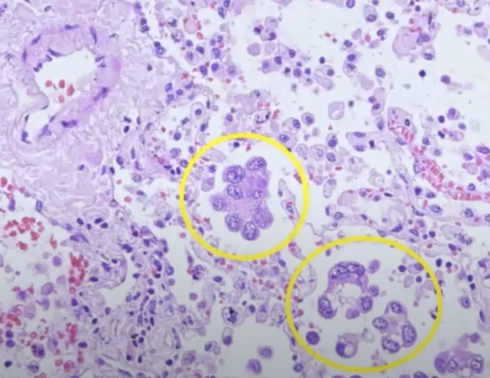
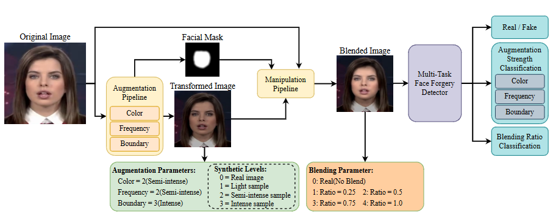
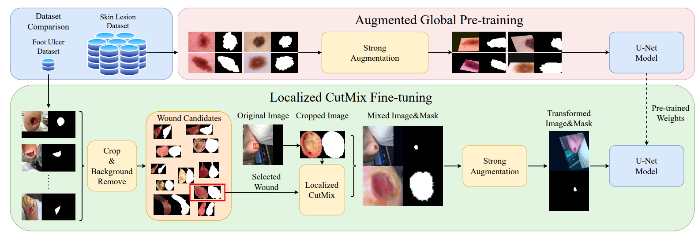
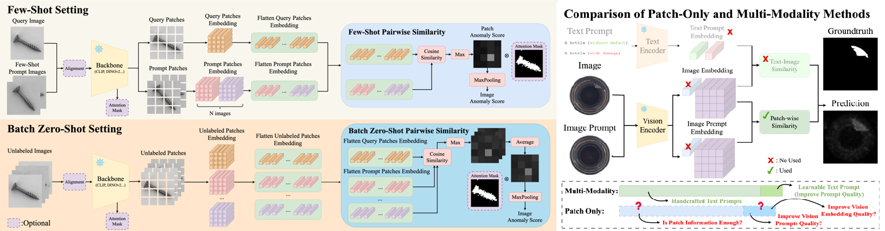

I build practical vision systems and study data-efficient learning for real-world inspection. Current interests include training-free / few-shot anomaly detection, segmentation, and robust deepfake detection.
Email: alan880603@gmail.com
Tech: Python, C/C++, Docker, FastAPI, ONNX/TensorRT, Triton, Gradio
My research focuses on bridging strong foundation models with reliable real-world deployment. I’m particularly interested in:
Full publication list: Google Scholar

STAS (Medical Image Segmentation Challenge)
Repository for our award-winning solution in a medical image segmentation competition, including training, inference, and experiment configurations for reproducible results.
Below are simplified pipeline overviews for selected papers. Each figure highlights the main idea and the system-level flow.

A robustness-oriented deepfake detector that learns with multi-task supervision. The pipeline encourages the model to capture forgery-consistent artifacts by jointly optimizing complementary objectives (e.g., forgery cues and auxiliary predictions), improving generalization across manipulation types and datasets.

A practical segmentation framework for limited labels: cross-domain augmentation expands appearance diversity, while model ensembling stabilizes predictions. The pipeline is designed for real-world clinical variability and improves robustness under limited supervision.

A training-free / few-shot industrial anomaly detection pipeline that produces patch-level anomaly maps for verification. The core idea is to unify visual prompting signals and patch-level comparisons to localize anomalies, enabling reliable inspection with minimal data and strong interpretability.
This will open your default email client.
Direct email: alan880603@gmail.com